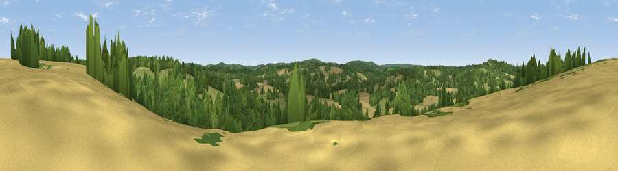

Viewpoint near Ashurst
#39427 in England · top 65% of its area beats it · near AshurstThe view, rendered

A 360° render of this exact spot computed from the terrain model, tree cover and land cover — summer colours, afternoon light, calibrated against photographs of famous viewpoints. Real trees, hedges and buildings will differ in detail.
The panorama
Grey silhouette: terrain skyline in each direction (720 bearings, Earth curvature and refraction included). Dashed green: skyline with trees (+15 m) and buildings (+8 m) as obstacles. Blue strip: how far the ground is visible on each bearing.
Where the view opens
Wedge length = distance to the farthest visible ground on that bearing (vegetation-aware). Rings at 10, 25 and 50 km.
What fills the view
41% woodland · 35% grassland · 24% cropland
Angular shares of the visible panorama (visual magnitude), not map area. Landscape diversity 0.48 (0–1 Shannon).
Key numbers
More beautiful places nearby
The staircase of upgrades: each row has a higher view potential than everything closer. Driving times are estimates from straight-line distance, calibrated against real road routing — check an actual route before setting out.
| Place | Direction | Drive | Score |
|---|---|---|---|
| Viewpoint near Ashurst | WNW · 2 km | ~4 min | 42.3 |
| Viewpoint near Cowden | WNW · 3 km | ~8 min | 53.2 |
| Viewpoint near Markbeech | NW · 6 km | ~12 min | 55.8 |
| Viewpoint near Upper Hartfield | SW · 8 km | ~15 min | 59.6 |
| Viewpoint near Ide Hill | N · 14 km | ~25 min | 65.1 |
| Viewpoint near Ide Hill | N · 14 km | ~25 min | 67.9 |
| Viewpoint near Shipbourne | NNE · 16 km | ~28 min | 69.1 |
| Malling Hill | SSW · 28 km | ~45 min | 73.8 |
51.12285, 0.16237 · source: screening · position refined by local search. Computed location — check access rights before visiting.